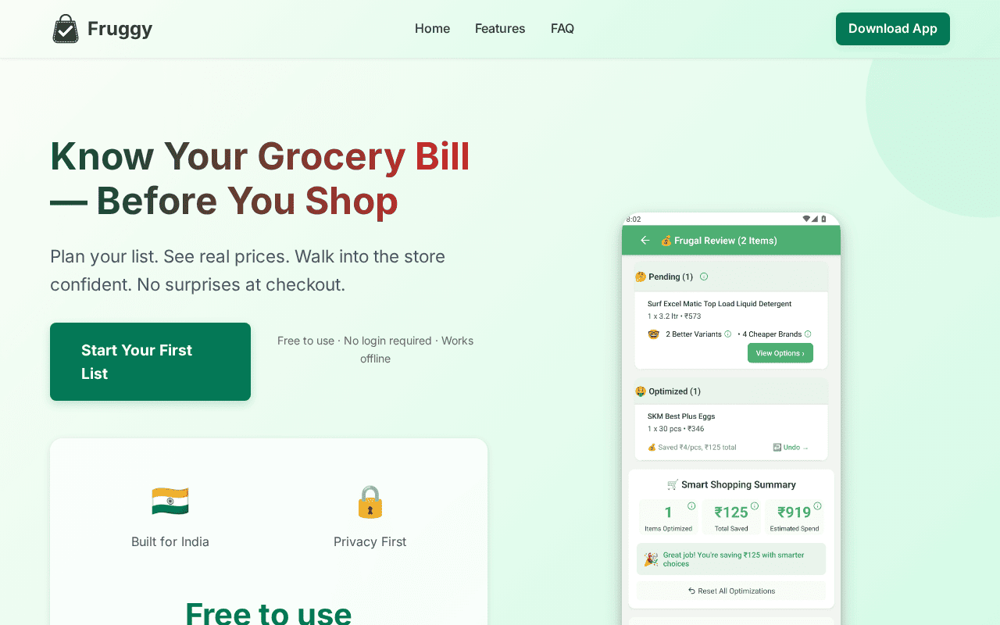
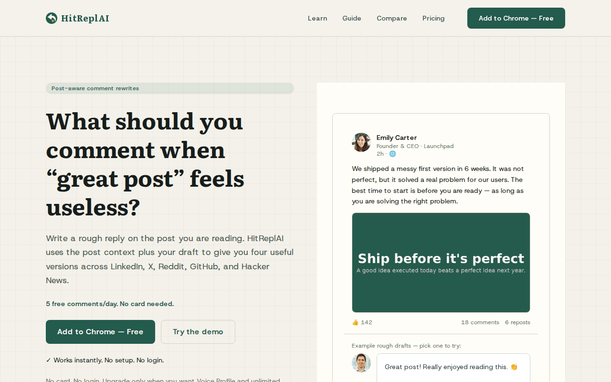
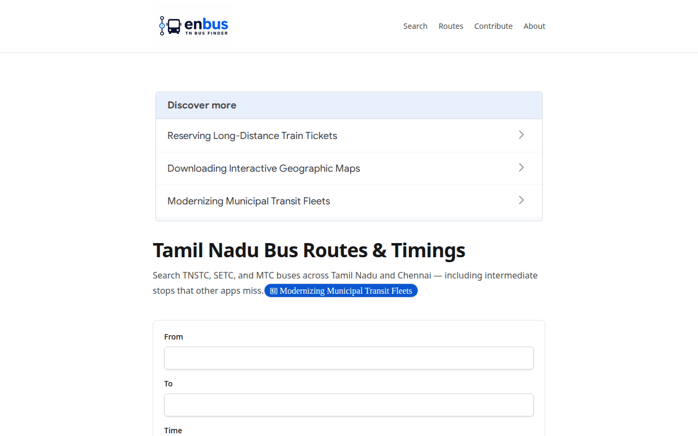

Udhayakumar
Backend engineer who builds and scales data infrastructure at growth-stage startups — architecture through production ownership.
Backend Engineer — Data Platforms & Architecture
Staff Engineer · Founding Engineer · Architecture Lead
Five years owning a data platform end to end — ingestion through serving to reporting — designed and led a team through every step of rebuilding it. Built the segmentation and recommendation engines on top. Three systems, one principle: refuse to normalize where the decision is irreversible; normalize where mistakes are reversible.
01
The data platform
Rebuilt how customer and order data flows through the company — from data arriving days late to under a minute, across 100+ merchant stores on five e-commerce platforms. Every other product below runs on this.
days → under a minute
100+ stores
5 e-commerce platforms
Node.js · MySQL · Debezium · Google Pub/Sub · Datastream · MongoDB · BigQuery · ClickHouse · Redis · GKE
The data platform
Rebuilt how customer and order data flows through the company — from data arriving days late to under a minute, across 100+ merchant stores on five e-commerce platforms. Every other product below runs on this.
Consolidates four systems that share no schema — commerce, click-tracking, loyalty, CRM — into one MySQL landing store, then fans that out via CDC to the three shapes downstream products actually need: point lookups, columnar analytics, population filtering. New sources and new consumers both plug into the same pipeline instead of requiring a bespoke integration each time.
1. Landed raw instead of normalizing at ingest — costs five schemas instead of one; bought reversibility. A wrong normalization at ingest means a multi-service migration to fix it. A wrong materialized view is a redefinition away from correction.
2. CDC out of the landing store rather than publishing at ingest — costs one more moving part; bought a stream that's provably what actually happened, not a second source of truth that can diverge.
3. Two replication mechanisms (Datastream + Debezium), narrowing to one over time as Debezium proved itself and Datastream's footprint shrank to segmentation alone. Adopting the managed option first and earning your way off it beats building the flexible thing speculatively.
4. Table-per-client multiplies operational surface (thousands of tables, migrations run across all of them) — accepted because the alternative failure mode (shared-table contention degrading one client's writes because of another's growth) is worse and far less visible.
5. Migrated store-by-store, slower because the data layer sits under every product surface and a bad cutover breaks all of them simultaneously.
• Data freshness: days → under a minute.
• 100+ stores, five e-commerce platforms served simultaneously.
• New downstream services and new source types both land as "subscribe to an existing stream," not "build a pipeline."
• Conversion attribution linking orders to specific blocks/email clicks — what let the product prove its own value to merchants.
• Reporting moved off a cost curve that scaled with query volume onto one the team controlled.
• Complete migration off the legacy architecture.
Read the full case study →
ConvertCart is an e-commerce personalisation platform. Everything it sells — segmentation, recommendations, on-site personalisation, triggered email — is downstream of one thing: holding a current, accurate picture of each merchant's shoppers, orders, products and catalogue. When I joined, that picture was days old. I owned this platform for nearly six years, across 100+ merchant stores on Shopify, BigCommerce, WooCommerce and Magento 1 and 2. I designed the architecture and led a team of up to 6 engineers through every step of the rebuild, handling all architecture decisions, code review, and team operations.
Platform sync ran as scheduled batch pulls against each merchant's commerce API, so data landed days late — worst during sale periods, when volume and API rate limiting peak together. Commerce platforms were never the whole picture either — merchants also run loyalty platforms (Zinrelo) and marketing/CRM systems (Microsoft Dynamics), none of which resemble a commerce API or each other. The deeper problem was on the consuming side: recommendations want point lookups, segmentation wants population filtering, reporting wants columnar aggregation — one store can't serve all three, so every new feature meant another bespoke path back to the data.
No merchant-side changes (no schema changes, no downtime, merchants absorb zero cost). Five platforms with genuinely different webhook reliability. An open-ended, never-final set of source types. Consumers wanting structurally incompatible read shapes. A live migration with no coverage gap allowed.
"Land raw, fan out shaped."
Every source lands in MySQL in its native API schema. Debezium tails the landing store into Pub/Sub. Three consumer services normalize for their destination: MongoDB (recommendations), ClickHouse (reporting and click-tracking), BigQuery (historical analytics).
Why land raw? (design rationale) →
Normalizing at ingest locks in platform quirks as permanent, irreversible modelling. A wrong schema at ingest is a multi-service migration; a wrong view is a redefinition. Also tractable with open-ended sources (Shopify, Zinrelo, Dynamics share no structure).
Table isolation & tenancy strategy →
Started shared (one table per entity), split to <platform>_<entity>_<clientId> under real growth pressure. Isolation, efficient indexes, single-table resync, clean offboarding. Growing into sharding beats building thousands of tables on day one.
Reporting: BigQuery first (managed, right choice early), later ClickHouse (cheaper for repeated queries against the same data).
Why the migration to ClickHouse? →
BigQuery bills on bytes scanned; reporting is the worst workload for that model (same dashboards, re-run on schedule, scanning overlapping data repeatedly). ClickHouse was cheap specifically because Debezium already existed — reporting became two more Pub/Sub consumers instead of a second replication stream. Tuned via column selection, partitioning by date, and ORDER BY design for the specific query patterns.
Debezium's initial snapshots of large schemas (50M+ rows in some client cases) occasionally exceeded Pub/Sub processing windows, causing lag spikes. Debugged by instrumenting consumer lag metrics per-topic and correlating with Debezium's snapshot progress logs. Resolution: split large snapshots into parallel chunks, reducing snapshot phase from 2 hours to 15 minutes per client. Also caught a silent failure mode where merchants adding new fields to their store caused ClickHouse schema mismatches — added schema detection and auto-migration on the consumer side, triggered a backward-compatible alert to engineering, allowing human review before auto-correcting.
Conversion attribution is the most fragile thing built here, because it's the wrong shape for the tool underneath it. Attribution is a windowed join between two streams (orders; click/email events inside a conversion window). Pub/Sub carries no state, so this runs as an hourly batch job with substantial reconciliation logic — an emulation of a primitive the platform doesn't provide.
Proposed moving the event backbone to Kafka + Kafka Streams on managed Confluent Cloud (deliberately not self-hosted — this was never a proposal to take on Kafka operations). Evaluated Dataflow first (the "why not stay on GCP" fair comparison) and rejected it: Beam's windowing/triggers/watermarks model is heavy to carry, and a misbehaving Dataflow job is hard to debug because the execution graph obscures what's happening — topics and consumer lag are legible in a way a Dataflow execution plan isn't, and with a small team, debuggability under pressure beats a better abstraction on paper.
The one piece left unresolved: Kafka Streams is JVM-only, the team was Node/TypeScript. Real open choice between ksqlDB (Confluent-managed, no new language enters the codebase) and a JVM service (learning curve, in tension with the maintainability argument just made against Dataflow). This is written as an open, unresolved evaluation, not a settled plan — that's deliberate. The unresolved piece is the one thing that survives an experienced interviewer's skepticism.
02
Customer segmentation
Built the system that lets a non-technical Customer Success rep build audiences like "shoppers who'd buy again if reminded" without writing a line of code or filing an engineering ticket. The hardest thing I built, and the module every marketing campaign ran through.
4 source systems, 1 query
built on the platform ↑
BigQuery · Google Datastream · MySQL · materialised views
Customer segmentation
Built the system that lets a non-technical Customer Success rep build audiences like "shoppers who'd buy again if reminded" without writing a line of code or filing an engineering ticket. The hardest thing I built, and the module every marketing campaign ran through.
Pulls customer signal from four disconnected systems — click-tracking, commerce, orders, loyalty — into one BigQuery-backed model, so a Customer Success rep can build an audience like "buy-again candidates with expiring loyalty points" by combining filters in a UI. No SQL, no engineering ticket.
1. Consolidated (moved data) rather than federated (moved computation) — costs a second full copy and continuous replication; buys one query language and genuinely possible joins.
2. Normalized at the analytics layer, not at ingest — deliberately the mirror image of the platform's ingest decision. Same modelling work, moved to where mistakes are cheap to fix.
3. Precomputed daily, not live — correct for campaign-cadence workloads; also why segmentation and the recommendation engine deliberately use different computation models for different questions ("who to contact this week" vs "what to show this shopper right now").
4. BigQuery's scan-based billing was an accepted risk on a read-heavy, repeatedly-evaluated workload — the same cost shape that later drove reporting to ClickHouse.
• CSMs compose multi-source segments with zero engineering involvement per segment and zero merchant-side schema changes.
• A new source type is a new table/view, not an engine change.
Read the full case study →
The module everything else targets through. Representative segment: shoppers who viewed a product that's since dropped in price, haven't ordered in 12 months, have LTV above $300, and hold loyalty points expiring this month. Built this with a team of 2 engineers and 1 analytics engineer, working closely with the Customer Success team to understand segment use cases and validate the UX.
That question spans four systems of origin (click-tracking, commerce catalogue, transactional orders, third-party loyalty balance) across three storage engines. Nothing joins — different query languages, performance characteristics, owners, cadences. And the person asking the question is a CSM who doesn't write SQL.
Authored by non-engineers in a UI (arbitrary predicate combinations, not a fixed report menu). Open-ended source set. No client-side schema changes. Read-heavy and repeated (segments run on a schedule, reused across campaigns).
Consolidate four source systems (click-tracking, commerce, loyalty, third-party) into BigQuery via Datastream. Materialized views normalize at analytics layer. CSM-authored predicates in UI; segments precompute daily.
Why consolidate instead of federate? →
Federated queries (live cross-system joins) inherit the performance of the slowest system, and each new source becomes an engine change. Consolidating to BigQuery lets new sources flow through materialized views, not query rewrites.
Identity resolution across 3 ID schemes →
No universal ID existed. Sources sent identifier pairs (email+phone, session+email, customer-id+email) from three schemes (click-tracking, commerce platform, loyalty program). Built transitive graph linking without collision — the same shopper across boundaries without accidentally merging different users sharing an identifier.
03
Recommendation blocks
Built the company's product recommendation feature from nothing, designed so store owners could trust it enough to turn it on. Most clients who tried it ended up on the fully automated version.
80%+ adoption, Smart tier
5 regions
built on the platform ↑
Node.js · Redis · MongoDB Atlas (multi-region) · ClickHouse · Pub/Sub
Recommendation blocks
Built the company's product recommendation feature from nothing, designed so store owners could trust it enough to turn it on. Most clients who tried it ended up on the fully automated version.
A three-tier ladder — Manual (CSM hand-picked) → Automated (rule-based) → Smart (live, behavioral, Redis-backed, five-region replicated) — so merchants could adopt the least risky tier first and graduate as trust built. Most who tried it ended up on Smart.
1. Split live vs. precomputed by tier, not uniformly — matched each tier's computation model to how fast its inputs actually move.
2. Read replicas trade freshness for distance, which cuts against the stated stock-accuracy constraint — accepted because the failure modes are asymmetric: a few seconds of lag affecting a few items in a narrow window beats permanently serving every non-US shopper a slow block. Stock/price changes from merchant webhooks flow through Debezium/Pub/Sub into Mongo as they happen, keeping the read model current rather than requiring a separate filtering step.
3. Redis-first buys latency, costs durability (an in-flight session is lost on a Redis failure) — acceptable for click-tracking, would not have made the same call for order data.
4. Built the least-interesting tier (Manual) first, deliberately, in trust order rather than sophistication order — which is why Smart eventually had an installed base to graduate into.
• 80%+ of clients adopted the Smart tier — the highest-trust tier, reached by clients who started on the lowest.
• Recommendations became first-party rather than bought.
• Expanded into a multi-channel personalisation feed.
• Served from five regions.
• Conversion attribution ties orders back to specific blocks (measured, not asserted, value).
Read the full case study →
ConvertCart sold personalisation but had no first-party recommendation product. I initiated it, built the first version solo, later rebuilt and expanded it with a team of 3 engineers (including myself) into the three-tier system below, owning architecture decisions, launch strategy, and client adoption.
The tempting build is one behavioural engine: collect signals, rank, render. That doesn't get adopted — merchandising is the part of a store owner's job they're least willing to hand to a black box, and blocks were configured by CSMs on the client's behalf, so the person deploying one had to be able to explain exactly what it would show and why. The real problem wasn't ranking quality — it was building something a non-technical CSM could confidently deploy.
Storefront latency budget in the tens of milliseconds when served from a regional replica; up to 200ms P99 for the smaller share of cross-continental requests (mitigated via five-region replication — see below). Renders inside page load; slow is worse than absent. Configured by CSMs, not engineers — every capability had to be UI-expressible and client-explainable. Price/stock accuracy (a wrong recommendation damages trust worse than an empty block). Cold start on both sides (new stores, new products). One system across five platforms and 100+ stores with very different traffic profiles.
"A ladder of control, not one engine." Manual (CSM hand-picked) → Automated (rule-based, daily) → Smart (live, behavioural). Built manual first for client trust, even though it required zero intelligence.
How does Smart tier compute live? →
On-site events land in Redis first, persisting through the session, flushing on close/30min inactivity. Smart blocks read from Redis (the signal they need: "what this shopper did in the last 90 seconds") is in-memory on the hot path, never behind a database read.
Regional replication strategy →
MongoDB read model replicated across five Atlas regions (US, Southeast Asia, Europe, South America, Australia). From a regional replica, P99 latency <50ms; cross-continental sees full 200ms network tax. Placing the input correctly beats caching an answer.
Infrastructure & Operations
Microservice fleet at ConvertCart
Recommendation ranking, email delivery, analytics ingestion, webhook distribution — split from the monolith into coordinated services across Node/TypeScript/PHP. Owned deployment, configuration, and observability across the fleet. Migrated without downtime; zero impact on merchant-facing systems. Reduced mean deployment time from 45 minutes to 8 minutes through automated CI/CD and canary release tooling.
MySQL optimisation at Scientific Games
Lottery reporting queries running 45 minutes daily on an un-indexed 20M-row schema. Analysed and restructured queries, designed covering indexes, and partitioned tables by date. Reduced the same workload from 45 minutes to 3, freeing database capacity. This enabled the reporting team to introduce real-time dashboards and ad-hoc queries without infrastructure scaling.
Email tooling at Tenlegs
A trigger-based email system that would either send immediately or schedule for later, pulling templates from a database and applying recipient data. Built to survive retries, deduplication, and failure recovery. Still used by the team years after I left. Handled 500K+ emails/day at peak with 99.9% delivery reliability.
Public Work
Most work lives in private company repositories. Featured public contributions:
Independent products
affairsmap.com
Current-affairs study platform for UPSC, SSC, Banking, RBI Grade B and Defence exam aspirants. Designed to turn daily news into structured learning material.
In development
Fruggy
Grocery shopping planner for Indian FMCG shoppers. Flutter app with a dataset of 1,500+ FMCG items, helping shoppers optimize their basket. Built end-to-end: backend (Node.js), mobile (Flutter), data ingestion pipeline, and merchant marketplace.
1,000+ downloads, featured in Indian app stores
HitReplAI
AI-powered social media reply generator that learns and mimics the user's writing style. Generate replies that sound like you.
Live on Chrome Web Store
en-bus
Tamil Nadu bus routes and timings finder. Real-time route search across TNSTC, SETC, and MTC buses, including intermediate stops that other apps miss.
Live · 93K+ trips indexedSkills
Deep
Data pipeline design — end-to-end ingestion, CDC, multi-layer serving Streaming & CDC — Debezium fan-out to Pub/Sub across 100+ stores BigQuery & analytics — Datastream replication, materialized-view segmentation ClickHouse — schema design, partitioning, ORDER BY tuning for reporting System design — microservices, distributed tracing, production reliability Architecture patterns — idempotency, event sourcing, state management E-commerce platforms — Shopify, BigCommerce, WooCommerce, Magento webhook APIs Webhook handling — reliability, deduplication, retry strategies at scaleWorking knowledge
Kafka Apache Beam Kubernetes GCP infrastructure React React Native Redis PostgreSQLLeadership & Scale
Team hiring & evaluation Architecture ownership Production incident response Large-scale migrations Cross-functional partnershipsBackground
13 years building backend systems and data infrastructure. Started building for the web in 2010. Spent nearly six years at ConvertCart owning a data platform end to end — ingestion through production, serving through reporting — and leading a team of engineers to rebuild it. Built segmentation and recommendation engines on top. Designed and shipped architectures handling 100+ customer stores across five e-commerce platforms. Founded and shipped independent products. Experienced hiring and evaluating backend/data engineers; comfortable in both IC and multiplier roles. Open to Staff/Principal/Founding-Engineer roles at Series A-B startups, remote or Bengaluru-based.
ConvertCart
Data platform, segmentation, recommendations. Owned, designed, led team rebuild.
Friday Media Group
Software Development Lead. Local and Niche Marketplace platforms.
Scientific Games
Lottery systems. Built and optimised data warehouse and reporting infrastructure.
Tenlegs
E-commerce backend and platform work. Built email tooling, analytics pipeline.
ISPG Technologies
Early-stage backend engineering. LAMP-stack web projects.
What I get hired for
Platform ownership. End-to-end responsibility for systems serving multiple internal teams and hundreds of external users. Comfortable holding both the design decisions and the operational debt. "Who owns this when production breaks?" — that person.
Refusing reversible complexity. Ship simpler systems by deferring normalization to layers where mistakes are cheap to fix. Trade off one-time complexity at ingest for ongoing flexibility. Spend operations cost to buy reversibility.
Scaling with small teams. Built systems serving 100+ customers with 6 engineers. Focus on automation, clear ownership, and choosing the right abstractions so humans don't become the bottleneck.
Judging tradeoffs honestly. Every architecture decision trades something off. Value candidates (and team members) who name the cost admitted, not just the benefit gained. Leads to better hiring and fewer bad surprises post-launch.
Engineering Principles
Reversibility
Normalise where mistakes are reversible; defer normalisation where they're not. A wrong materialized view is a redefinition away from correction. A wrong schema at ingest is a multi-service migration. Applied at the data platform: land raw, fan-out shaped. Applied at segmentation: consolidate first, model at the analytics layer second.
Match storage to question
Recommendations want point lookups; segmentation wants population filtering; reporting wants columnar aggregation. One database cannot efficiently answer all three. Choose the storage pattern for the access pattern, not the other way around.
Operational simplicity beats sophisticated abstractions
Legible systems are easier to debug than clever ones. A Pub/Sub consumer publishing lag metrics and failing visibly beats a Dataflow job hiding what's actually happening in an execution graph. When a small team owns it, debuggability under pressure beats a better abstraction on paper.
Ship in trust order, not sophistication order
Built manual recommendation blocks first (zero intelligence, but deployable day one), then automated, then smart. Clients who started on manual graduated to smart. Sophistication matters less than adoption; adoption requires trust.
Architecture Decisions Reference
Notable patterns evaluated and adopted across ConvertCart:
| Decision | Choice | Alternative | Why |
|---|---|---|---|
| Landing schema | Raw, per-platform | Unified schema | Normalisation is irreversible at ingest; reversibility later is worth the cost now. |
| CDC source | Debezium tail | Publish at ingest | Provable stream of what happened, not a divergent second source of truth. |
| Reporting warehouse | ClickHouse | BigQuery | BigQuery's scan-based billing wrong-shaped for repeated queries; Pub/Sub cheaper. |
| Recommendation latency | Redis-first + regions | Query on demand | Physics >> compute. Place input correctly, not cache an answer. |
| Recommendation tiers | Manual first | Smart first | Trust order > sophistication order. 80% graduated once they trusted the platform. |
Production Stories
Debezium snapshot overflow (ConvertCart, 2022)
Initial snapshots of 50M+ row schemas exceeded Pub/Sub windows, causing lag spikes visible to customers. Root cause: snapshot phase was serialized instead of parallelised. Instrumented consumer lag metrics per-topic, correlated with Debezium logs. Resolution: split snapshots into parallel chunks, reducing per-client snapshot time from 2 hours to 15 minutes. Also added schema detection on ClickHouse consumer to catch merchant field additions and auto-migrate.
Segmentation identity collision (ConvertCart, 2021)
Segments using email-based identity resolution occasionally included the wrong shopper when multiple accounts shared an email. Discovered during customer audit. Root cause: identity graph wasn't accounting for transitive closure across identifier schemes. Added bidirectional deduplication in the join logic and retro-corrected historical segments. Learned: identity resolution requires explicit collision handling, not just transitive linking.
I'm looking for my next high-ownership backend role — Staff Engineer, Founding Engineer, or Backend Architect. Remote-first or Bengaluru. Series A–B preferred.
mail4udhaya@gmail.com · +91 7259948358